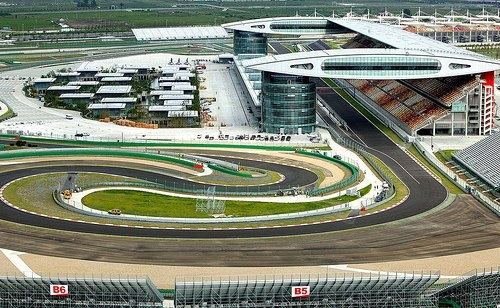

Shanghai International Circuit

Technical Details
Location: Shanghai, China
Length: 5.451 km
Laps: 56
First GP: 2004
Curiosities
Designed by Hermann Tilke, the Shanghai International Circuit is known for its unique layout inspired by the Chinese character “shang” (上). It debuted in 2004 and quickly became one of the most technically demanding modern circuits. The long, sweeping corners and heavy braking zones test tire management and aerodynamic stability. It has hosted many strategic and weather-influenced races.